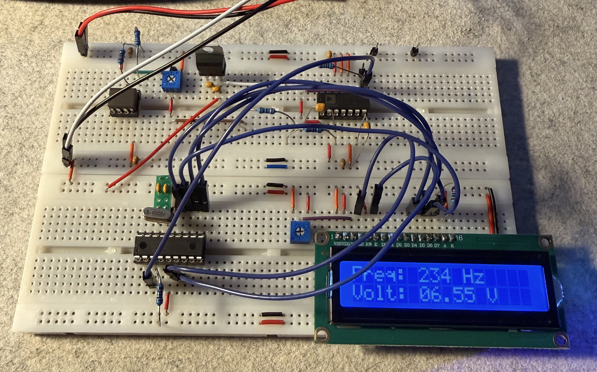

Le PIC16F84A ne possédant aucun ADC interne ni de protocole de communication série, nous allons utiliser un convertisseur tension-fréquence (AD650) et le compteur de la broche RA4/T0CKI du PIC16F84A afin de mesurer une tension entre 0 et 10V et de l'afficher sur un écran LCD. Le tout est écrit sur MPLAB X IDE et compilé avec XC8.

01. Le Matériel Utilisé
- Microcontrôleur Microchip PIC16F84A
- Convertisseur Tension-Fréquence AD650
- Résistances et Condensateurs
- Écran LCD 1602 (Mode 4 bits)
- Quartz 8 MHz et condensateurs associés
- Fils de connexion et plaque de prototypage
- Quelques autres composants pour le découplage et la régulation.
02. Programme C (XC8 / MPLAB X)
/*
* File: main.c
* Author: Antoine Polo
*
* Created on September 29, 2026, 10:32 PM
*/
#pragma config FOSC = HS // Oscillator Selection bits (HS oscillator)
#pragma config WDTE = OFF // Watchdog Timer disabled
#pragma config PWRTE = OFF // Power-up Timer disabled
#pragma config CP = OFF // Code protection disabled
#include <xc.h>
#define _XTAL_FREQ 8000000
#define RS RB0
#define EN RB1
#define D4 RB4
#define D5 RB5
#define D6 RB6
#define D7 RB7
void lcd_port(char a);
void lcd_cmd(char a);
void lcd_clear(void);
void lcd_set_cursor(char a, char b);
void lcd_init(void);
void lcd_write_char(char a);
void lcd_write_string(const char *a);
void lcd_write_int(unsigned int val, unsigned char digits);
static unsigned int freq = 0;
static unsigned int tension_mv = 0;
void main(void) {
TRISB = 0x00;
TRISA = 0b00010000;
OPTION_REG = 0b00101000;
lcd_init();
lcd_clear();
while(1) {
TMR0 = 0;
// Le compteur n'étant que de 8 bits, nous sommes obligés d'échantillonner sur 500 ms, sinon il déborde, puis de multiplier la fréquence par deux pour obtenir l'échantillonnage sur une seconde.
// On pourrait également assigner le prescaler au Timer0 (1:2) et ainsi échantillonner sur une seconde.
__delay_ms(500);
freq = (unsigned int)TMR0 * 2;
// Conversion de la tension en fréquence (1Hz = 28mV)
tension_mv = freq * 28;
lcd_set_cursor(1, 1);
lcd_write_string("Freq: ");
lcd_write_int(freq, 3);
lcd_write_string(" Hz ");
lcd_set_cursor(2, 1);
lcd_write_string("Volt: ");
lcd_write_int(tension_mv / 1000, 2);
lcd_write_char('.');
lcd_write_int((tension_mv % 1000) / 10, 2);
lcd_write_string(" V ");
}
}
void lcd_write_int(unsigned int val, unsigned char digits) {
static char buf[5];
static unsigned char i;
for (i = 0; i < digits; i++) {
buf[i] = (char)((val % 10) + '0');
val /= 10;
}
while (i > 0) {
i--;
lcd_write_char(buf[i]);
}
}
void lcd_port(char a) {
D4 = (a & 1) ? 1 : 0;
D5 = (a & 2) ? 1 : 0;
D6 = (a & 4) ? 1 : 0;
D7 = (a & 8) ? 1 : 0;
}
void lcd_cmd(char a) {
RS = 0;
lcd_port(a);
EN = 1;
__delay_ms(4);
EN = 0;
}
void lcd_clear(void) {
lcd_cmd(0);
lcd_cmd(1);
}
void lcd_set_cursor(char a, char b) {
char temp, z, y;
if(a == 1) {
temp = 0x80 + b - 1;
z = temp >> 4;
y = temp & 0x0F;
lcd_cmd(z);
lcd_cmd(y);
} else if(a == 2) {
temp = 0xC0 + b - 1;
z = temp >> 4;
y = temp & 0x0F;
lcd_cmd(z);
lcd_cmd(y);
}
}
void lcd_init(void) {
lcd_port(0x00);
__delay_ms(20);
lcd_cmd(0x03);
__delay_ms(5);
lcd_cmd(0x03);
__delay_ms(11);
lcd_cmd(0x03);
lcd_cmd(0x02);
lcd_cmd(0x02);
lcd_cmd(0x08);
lcd_cmd(0x00);
lcd_cmd(0x0C);
lcd_cmd(0x00);
lcd_cmd(0x06);
}
void lcd_write_char(char a) {
char temp, y;
temp = a & 0x0F;
y = a & 0xF0;
RS = 1;
lcd_port(y >> 4);
EN = 1;
__delay_us(40);
EN = 0;
lcd_port(temp);
EN = 1;
__delay_us(40);
EN = 0;
}
void lcd_write_string(const char *a) {
for(unsigned char i = 0; a[i] != '\0'; i++)
lcd_write_char(a[i]);
}
Principe de mesure
L'échantillonnage de 500 ms permet d'éviter le dépassement de la capacité du registre 8 bits de Timer0 (TMR0). La fréquence finale comptée est multipliée par un facteur d'échelle correspondant à la calibration de l'AD650 (1 Hz = 28 mV).